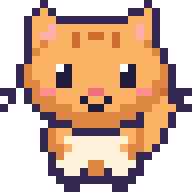
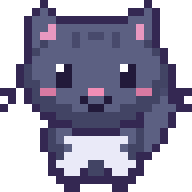

My Little Pet is a free pixel-art companion for Windows desktops and Android/iPhone browsers. Name your pet, feed it, play mini-games, and unlock new looks. Read the quick guide →
SMALL COMPANION. BIG PERSONALITY.
A little friend. A lot of joy.✳
Make your everyday a little softer. A tiny pet to keep you company, celebrate the small things, and make your screen feel like home.
A little love goes a long way.Click Mochi to say hello!
REAL PET ART. EXTRA LARGE CUTENESS.
✦ Made for little breaks♡ No account needed✦ Your pet, your personality♡ Free to play
FIND YOUR KIND OF CUTE
One little world. Four very good friends.
A curious cat, a loyal pup, a bouncy bunny, or a clever fox. Start with a cat and earn coins to welcome the others.
Mochi the kitty is ready to meet you. Tap another pet to preview it.
A HELLO THAT’S JUST FOR YOU
Hi Rose! I’m Mochi. ♡
MOCHI ♥ ROSE
TWO NAMES. ONE LITTLE FRIENDSHIP.
Yours, from the very first hello.
You name your pet. Your pet remembers your name. Try it here, then bring your little friendship into the mobile app.
THE BEST KIND OF DISTRACTION
Little moments. Lovely company.
There’s no rush. Just a small friend and a few things to smile about.
01 / YOUR DESKTOP, A LITTLE HAPPIER
Let a little joy wander in.
On Windows, your pet roams right on your desktop. Pick them up, follow your cursor, toss a ball, or send them home for a well-earned nap.
▤today’s ideas
things to do today make a little friend take a happy break ♡
⊞▣▧♡✦
Desktop mode illustration · Windows app
02 / CARE IS A LOVE LANGUAGE
♡
Feed. Play. Grow together.
Fill their bowl, lift their mood and earn coins with little acts of care. Levels bring new rooms and new reasons to visit.
HAPPINESS
98%
03 / A STYLE ALL THEIR OWN
Same little friend. A whole new look.


Three coats per pet. Bows, flowers and crowns. A cozy room that grows with you.
MY LITTLE PET◉ 20
Hi, Rose♡
Mochi is happy to see you.
✦
MOCHI · LEVEL 1
◒Feed✦Play☾Rest
A LITTLE HOME IN YOUR POCKET
Good company. Wherever you go.
Your phone gets a cozy pet room of its own. Open the mobile app, make a friend, and add it to your Home Screen. No app store trip required.
Feed, play, rest and earn little rewards
Customize names, coats, accessories and rooms
Works offline after your first visit
Export a backup to keep your progress safe
Open the mobile app ↗Android & iPhone · Pet lives inside the app. Desktop and mobile progress are separate.
YOUR LITTLE FRIEND IS WAITING
Make a little room for happy.
Choose your home. We’ll bring the company.
⊞
On your desktop
A tiny companion in a cozy room, or roaming across your Windows desktop.
Download for Windows ↓Windows 10/11 · 64-bit · v1.1.0 Installer · no Python neededInstallation & release details
Run the installer, then open My Little Pet from Start. Name your pet and yourself. Press D to switch to desktop mode after setup.
This first release is unsigned, so Windows may show an unknown-publisher warning. Only use this official download if you trust its source. Save data is kept in your local AppData folder and is retained when uninstalling.
Yes. The desktop app and mobile web app are free. Coins are earned by playing and caring for your pet, with no real-money purchases.
Can I change my name or my pet’s name?
Anytime. On Windows, open Menu → Owner + Pet Names. On mobile, open Settings → Your little family. Your progress stays with your pet.
Does the pet appear over my other apps?
The Windows app has a transparent desktop mode. Press D in your pet’s room to enter it; click ROOM to return. On phones, your pet stays inside its app.
Does it work without the internet?
The Windows app works offline. On mobile, open the app online once and wait for “Ready for offline visits” before going offline. Your pet is saved on your device; clearing browser data removes that save. Use Export backup first.
Do my desktop and phone share the same pet?
They have separate local saves for now. Mobile backup files can be exported and restored in the mobile web app on another device. Automatic cloud sync is not included.
What can I play on Windows?
Catch the Bug and Treat Drop, plus daily care goals, achievements and room unlocks. Mobile includes a quick treat hunt alongside feeding, playing and resting.